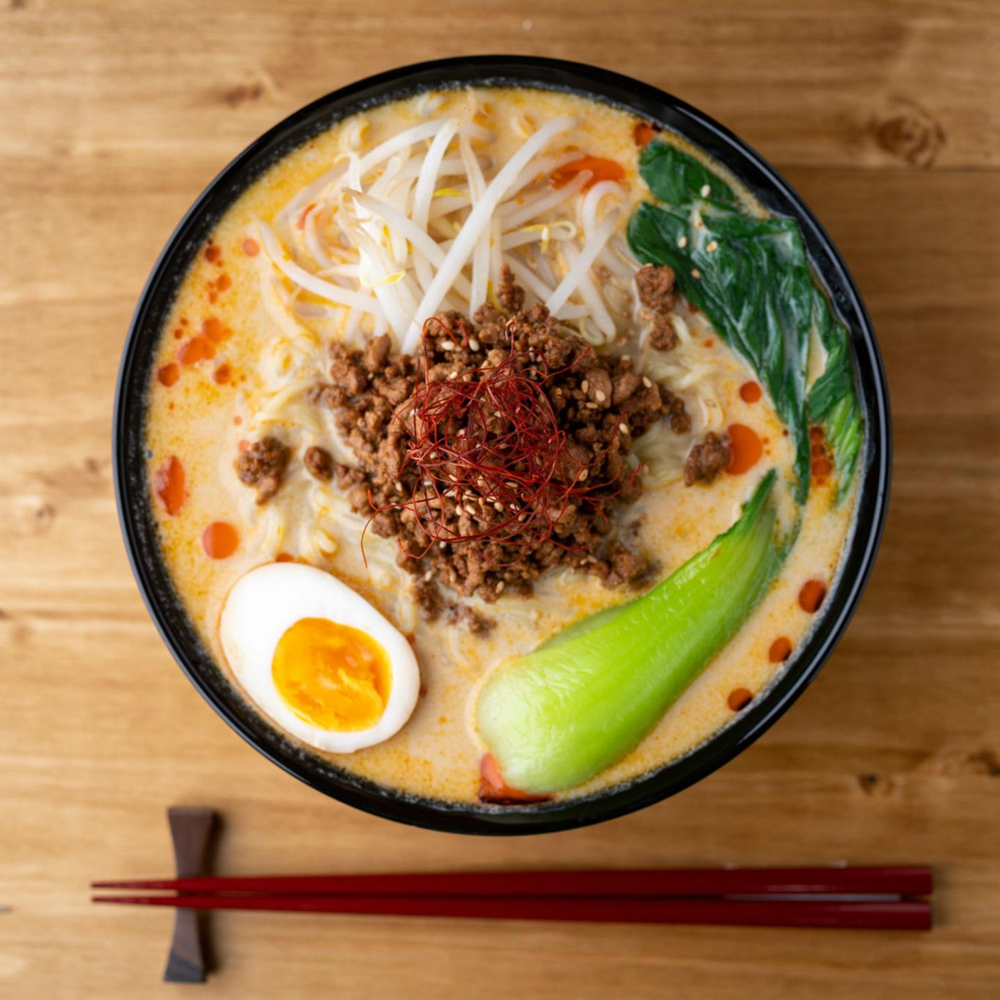

Tantamen Ramen

How to make Tantamen Ramen
Tantamen Ramen are a japanese variant of Ramen, referencing the chinese Dandan Ramen, also called Dandanmian, from the Sichuan Province. They are a spicy, savory noodle soup with lots of flavor. You'll find a full list of ingredients and a step by step guide below.
Ingredients (1 Serving)
- 1 egg
- 1 1/2 clove of garlic
- Soj sauce
- sugar
- small piece of ginger
- 1/2 - 1 charlottes
- 1 tsp chilli oil
- 1 tsp Toban Djan
- 50g minced pork
- 1 tbsp Mirin
- 1 tbsp Tahini
- 1 tsp roasted sesame oil
- 80 ml chicken broth
- 200 ml soy milk
- pinch of salt
- 1/4 Pak Choi
- 25g bean sprouts
- 50g Ramen noodles
- 1 tsp sesame
Steps
- Cook eggs for 5 mins. Mince 1/2 cloves of garlic. Mix Soj sauce with 8 teable spoons of water, the minced garlic, 1/2 tsp sugar and put it on low to medium heat untli the sugar is dissolved. Put the cooked and peeled egg into the sauce and put it aside.
- mince or grate a small piece of ginger and 1 clove of garlic. Dice charlottes in small cubes. Put everything in a pan on small to medium heat for 1-3 mins. Add 1 tbsp Toban Djan and mix. Add minced pork and turn heat to medium to high and sear for 2-3 mins. Add 1 tbsp mirin and 1 tbsp Soj sauce. Cook until liquid is completely evaporated and set aside.
- Now we make the Tare, the base of the soup. In your Ramen bowl mix together 1 tsp of sugar, 1 tsp roasted sesame oil and 1 tsp chilli oil. Seperately warm up the 200 ml soj milk and 80 ml chicken broth, but dont let it boil.
- Bring a pot of water to a boil and add a little bit of salt. Blanch the Pak Choi for 1-2 mins and set aside.
- Cook the ramen in the same water according to the package instructions.
- Now we assemble the dish. Add the hot soj milk chicken broth to your Ramen bowl with the Tare in it and mix well. Add the Ramen noodles. On top add the egg, Pak Choi, bean sprouts and the pork. Garnish with sesame seeds and add some chilli oil to taste.